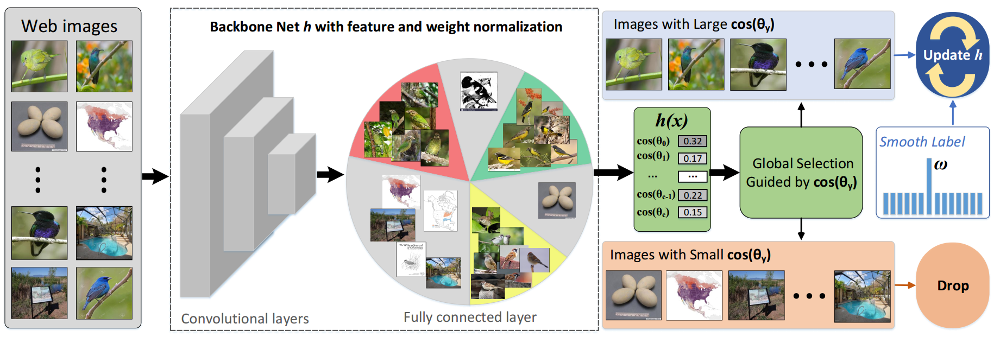

Computer vision (CV) is an interdisciplinary scientific field of artificial intelligence (AI), which deals with how computers can be made to gain high-level understanding from digital images or videos. The tasks of computer vision include methods for acquiring, processing, analyzing and understanding digital images, and the process of extracting numerical or symbolic information, e.g., in the forms of decisions or predictions, from high-dimensional raw image data in the real world.As an interesting, fundamental and challenging problem in computer vision, fine-grained image analysis (FGIA) has been an active area oZ research for several decades. The goal of FGIA is to retrieve, recognize and generate images belonging to multiple subordinate categories of a super-category (akameta-category), e.g., different species of animals/plants, different models of cars, different kinds of retail products, etc. In the real-world, FGIA enjoys a wide-range of applications in both industry and research societies, such as automatic biodiversity monitoring, climate change evaluation, intelligent retail, intelligent transportation, and many more. Particularly, a number of influential academic competitions about FGIA are frequently held on Kaggle.Several representative competitions, to name a few, are the Nature Conservancy Fisheries Monitoring (for fish species categorization), Humpback Whale Identification (for whale identity categorization) and so on. Each competition attracted more than 300 teams worldwide to participate, and some even exceeded 2,000 teams.
The architecture of our proposed model is as follows
After creating a virtual environment of python 3.7, run pip install -r requirements.txt to install all dependencies
The code is currently tested only on GPU
wget https://wsnfg.oss-cn-hongkong.aliyuncs.com/web-bird.tar.gz
wget https://wsnfg.oss-cn-hongkong.aliyuncs.com/web-car.tar.gz
wget https://wsnfg.oss-cn-hongkong.aliyuncs.com/web-aircraft.tar.gz
tar -xvf web-bird.tar.gz
tar -xvf web-car.tar.gz
tar -xvf aircraft-car.tar.gz
wget https://smoothlearning.oss-cn-hongkong.aliyuncs.com/resnet50_81.pth
ln -s web-bird bird
bash run_demo.sh
ln -s web-bird bird
ln -s web-car car
ln -s web-aircraft aircraft
bash run_train_resnet.sh
run_train_bcnn.sh.
If you find this useful in your research, please consider citing:
@inproceedings{zhang2020web,
title={Web-Supervised Network for Fine-Grained Visual Classification},
author={Chuanyi Zhang, Yazhou Yao, Jiachao Zhang, Jiaxin Chen, Pu Huang, Jian Zhang, Zhenmin Tang},
booktitle={IEEE International Conference on Multimedia and Expo (ICME)},
year={2020}
}